<DOCUMENT>
<TYPE>EX-99.2
<SEQUENCE>3
<FILENAME>mod-20260729xex99d2.htm
<DESCRIPTION>EX-99.2
<TEXT>
<html><head></head><body link=blue lang="EN-US"><div><div align="center"><div align="center"><p style="font-family:'Times New Roman';font-size:10pt;text-align:right;margin:2pt 0pt 2pt 0pt;"><b style="font-weight:bold;">Exhibit 99.2</b></p><table border="0" cellspacing="0" cellpadding="0" style="width:100%;border-collapse:collapse;"><tr style="page-break-inside:avoid;"><td style="padding:0in 5.4pt 0in 5.4pt;valign:middle;width:7.7%"></td><td width="84.4%" valign="top" style="padding:0in 5.4pt 0in 5.4pt;width:92.3%;"><p align="center" style="margin:0in 0in .0001pt;text-align:center;"></p></td><td width="7.7%" valign="middle" style="padding:0in 5.4pt 0in 5.4pt;width:7.7%;"><p style="margin:0in 0in .0001pt;"><font size="1" color="white" face="Arial" style="color:white;font-size:1.0pt;">First Quarter
Fiscal 2027
July 30, 2026 </font></p></td></tr></table></div><div style="margin-left:2.6515151515151%;margin-right:2.65151515151515%;page-break-after:always;" ><div style="background-color:#000000;clear:both;height:2pt;border:0;margin:30pt 0pt 30pt 0pt;"></div></div><div align="center"><table border="0" cellspacing="0" cellpadding="0" style="width:100%;border-collapse:collapse;"><tr style="page-break-inside:avoid;"><td style="padding:0in 5.4pt 0in 5.4pt;valign:middle;width:7.7%"></td><td width="84.4%" valign="top" style="padding:0in 5.4pt 0in 5.4pt;width:92.3%;"><p align="center" style="margin:0in 0in .0001pt;text-align:center;"></p></td><td width="7.7%" valign="middle" style="padding:0in 5.4pt 0in 5.4pt;width:7.7%;"><p style="margin:0in 0in .0001pt;"><font size="1" color="white" face="Arial" style="color:white;font-size:1.0pt;">NEIL BRINKER
President and Chief Executive Officer
MICK LUCARELI
Executive Vice President and Chief Financial Officer
KATHY POWERS
Vice President, Treasurer, and Investor Relations
2</font></p></td></tr></table></div><div style="margin-left:2.6515151515151%;margin-right:2.65151515151515%;page-break-after:always;" ><div style="background-color:#000000;clear:both;height:2pt;border:0;margin:30pt 0pt 30pt 0pt;"></div></div><div align="center"><table border="0" cellspacing="0" cellpadding="0" style="width:100%;border-collapse:collapse;"><tr style="page-break-inside:avoid;"><td style="padding:0in 5.4pt 0in 5.4pt;valign:middle;width:7.7%"></td><td width="84.4%" valign="top" style="padding:0in 5.4pt 0in 5.4pt;width:92.3%;"><p align="center" style="margin:0in 0in .0001pt;text-align:center;">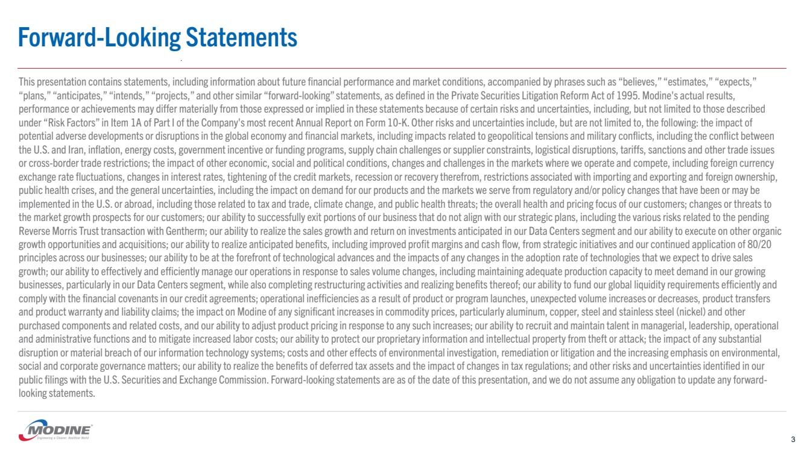</p></td><td width="7.7%" valign="middle" style="padding:0in 5.4pt 0in 5.4pt;width:7.7%;"><p style="margin:0in 0in .0001pt;"><font size="1" color="white" face="Arial" style="color:white;font-size:1.0pt;">Forward-Looking Statements
3
This presentation contains statements, including information about future financial performance and market conditions, accompanied by phrases such as &#x201C;believes,&#x201D; &#x201C;estimates,&#x201D; &#x201C;expects,&#x201D;
&#x201C;plans,&#x201D; &#x201C;anticipates,&#x201D; &#x201C;intends,&#x201D; &#x201C;projects,&#x201D; and other similar &#x201C;forward-looking&#x201D; statements, as defined in the Private Securities Litigation Reform Act of 1995. Modine's actual results,
performance or achievements may differ materially from those expressed or implied in these statements because of certain risks and uncertainties, including, but not limited to those described
under &#x201C;Risk Factors&#x201D; in Item 1A of Part I of the Company's most recent Annual Report on Form 10-K. Other risks and uncertaintiesinclude, but are not limited to, the following: the impact of
potential adverse developments or disruptions in the global economy and financial markets, including impacts related to geopolitical tensions and military conflicts, including the conflict between
the U.S. and Iran, inflation, energy costs, government incentive or funding programs, supply chain challenges or supplier constraints, logistical disruptions, tariffs, sanctions and other trade issues
or cross-border trade restrictions; the impact of other economic, social and political conditions, changes and challenges in the markets where we operate and compete, including foreign currency
exchange rate fluctuations, changes in interest rates, tightening of the credit markets, recession or recovery therefrom, restrictions associated with importing and exporting and foreign ownership,
public health crises, and the general uncertainties, including the impact on demand for our products and the markets we serve from regulatory and/or policy changes that have been or may be
implemented in the U.S. or abroad, including those related to tax and trade, climate change, and public health threats; the overall health and pricing focus of our customers; changes or threats to
the market growth prospects for our customers; our ability to successfully exit portions of our business that do not align with our strategic plans, including the various risks related to the pending
Reverse Morris Trust transaction with Gentherm; our ability to realize the sales growth and return on investments anticipated in our Data Centers segment and our ability to execute on other organic
growth opportunities and acquisitions; our ability to realize anticipated benefits, including improved profit margins and cash flow, from strategic initiatives and our continued application of 80/20
principles across our businesses; our ability to be at the forefront of technological advances and the impacts of any changes in the adoption rate of technologies that we expect to drive sales
growth; our ability to effectively and efficiently manage our operations in response to sales volume changes, including maintaining adequate production capacity to meet demand in our growing
businesses, particularly in our Data Centers segment, while also completing restructuring activities and realizing benefits thereof; our ability to fund our global liquidity requirements efficiently and
comply with the financial covenants in our credit agreements; operational inefficiencies as a result of product or program launches, unexpected volume increases or decreases, product transfers
and product warranty and liability claims; the impact on Modine of any significant increases in commodity prices, particularly aluminum, copper, steel and stainless steel (nickel) and other
purchased components and related costs, and our ability to adjust product pricing in response to any such increases; our abilityto recruit and maintain talent in managerial, leadership, operational
and administrative functions and to mitigate increased labor costs; our ability to protect our proprietary information and intellectual property from theft or attack; the impact of any substantial
disruption or material breach of our information technology systems; costs and other effects of environmental investigation, remediation or litigation and the increasing emphasis on environmental,
social and corporate governance matters; our ability to realize the benefits of deferred tax assets and the impact of changes in tax regulations; and other risks and uncertainties identified in our
public filings with the U.S. Securities and Exchange Commission. Forward-looking statements are as of the date of this presentation, and we do not assume any obligation to update any forward-looking statements. </font></p></td></tr></table></div><div style="margin-left:2.6515151515151%;margin-right:2.65151515151515%;page-break-after:always;" ><div style="background-color:#000000;clear:both;height:2pt;border:0;margin:30pt 0pt 30pt 0pt;"></div></div><div align="center"><table border="0" cellspacing="0" cellpadding="0" style="width:100%;border-collapse:collapse;"><tr style="page-break-inside:avoid;"><td style="padding:0in 5.4pt 0in 5.4pt;valign:middle;width:7.7%"></td><td width="84.4%" valign="top" style="padding:0in 5.4pt 0in 5.4pt;width:92.3%;"><p align="center" style="margin:0in 0in .0001pt;text-align:center;">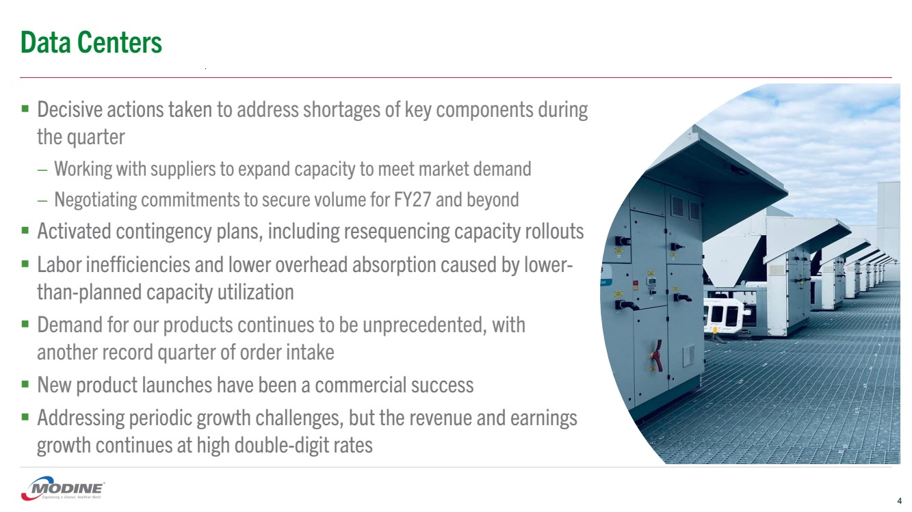</p></td><td width="7.7%" valign="middle" style="padding:0in 5.4pt 0in 5.4pt;width:7.7%;"><p style="margin:0in 0in .0001pt;"><font size="1" color="white" face="Arial" style="color:white;font-size:1.0pt;">Data Centers
4
&#x25AA; Decisive actions taken to addressshortages of key components during
the quarter
&#x2013; Working with suppliers to expand capacity to meet market demand
&#x2013; Negotiating commitments to secure volume for FY27 and beyond
&#x25AA; Activated contingency plans, including resequencing capacity rollouts
&#x25AA; Labor inefficiencies and lower overhead absorption caused by lower-than-planned capacity utilization
&#x25AA; Demand for our products continues to be unprecedented, with
another record quarter of order intake
&#x25AA; New product launches have been a commercial success
&#x25AA; Addressing periodic growth challenges, but the revenue and earnings
growth continues at high double-digit rates</font></p></td></tr></table></div><div style="margin-left:2.6515151515151%;margin-right:2.65151515151515%;page-break-after:always;" ><div style="background-color:#000000;clear:both;height:2pt;border:0;margin:30pt 0pt 30pt 0pt;"></div></div><div align="center"><table border="0" cellspacing="0" cellpadding="0" style="width:100%;border-collapse:collapse;"><tr style="page-break-inside:avoid;"><td style="padding:0in 5.4pt 0in 5.4pt;valign:middle;width:7.7%"></td><td width="84.4%" valign="top" style="padding:0in 5.4pt 0in 5.4pt;width:92.3%;"><p align="center" style="margin:0in 0in .0001pt;text-align:center;">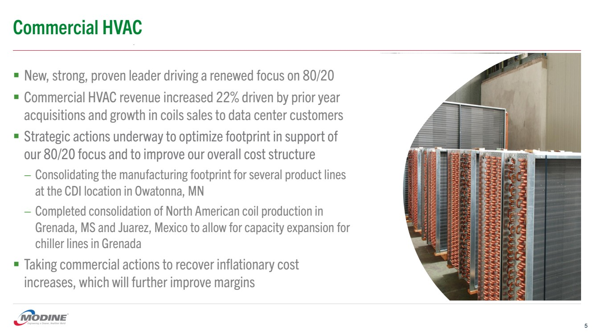</p></td><td width="7.7%" valign="middle" style="padding:0in 5.4pt 0in 5.4pt;width:7.7%;"><p style="margin:0in 0in .0001pt;"><font size="1" color="white" face="Arial" style="color:white;font-size:1.0pt;">Commercial HVAC
5
&#x25AA; New, strong, proven leader driving a renewed focus on 80/20
&#x25AA; Commercial HVAC revenue increased 22% driven by prior year
acquisitions and growth in coils sales to data center customers
&#x25AA; Strategic actions underway to optimize footprint in support of
our 80/20 focus and to improve our overall cost structure
&#x2013; Consolidating the manufacturing footprint for several product lines
at the CDI location in Owatonna, MN
&#x2013; Completed consolidation of North American coil production in
Grenada, MS and Juarez, Mexico to allow for capacity expansion for
chiller lines in Grenada
&#x25AA; Taking commercial actions to recover inflationary cost
increases, which will further improve margins</font></p></td></tr></table></div><div style="margin-left:2.6515151515151%;margin-right:2.65151515151515%;page-break-after:always;" ><div style="background-color:#000000;clear:both;height:2pt;border:0;margin:30pt 0pt 30pt 0pt;"></div></div><div align="center"><table border="0" cellspacing="0" cellpadding="0" style="width:100%;border-collapse:collapse;"><tr style="page-break-inside:avoid;"><td style="padding:0in 5.4pt 0in 5.4pt;valign:middle;width:7.7%"></td><td width="84.4%" valign="top" style="padding:0in 5.4pt 0in 5.4pt;width:92.3%;"><p align="center" style="margin:0in 0in .0001pt;text-align:center;">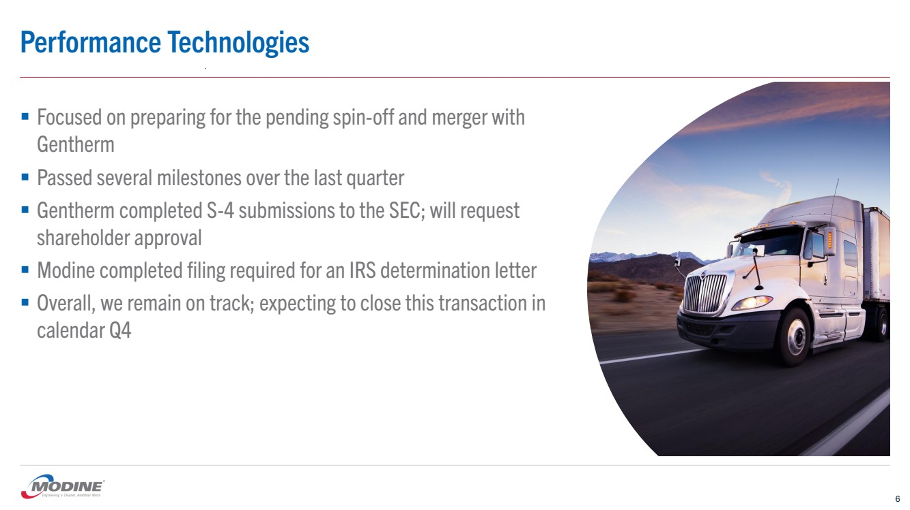</p></td><td width="7.7%" valign="middle" style="padding:0in 5.4pt 0in 5.4pt;width:7.7%;"><p style="margin:0in 0in .0001pt;"><font size="1" color="white" face="Arial" style="color:white;font-size:1.0pt;">Performance Technologies
&#x25AA; Focused on preparing for the pending spin-off and merger with
Gentherm
&#x25AA; Passed several milestones over the last quarter
&#x25AA; Gentherm completed S-4 submissions to the SEC; will request
shareholder approval
&#x25AA; Modine completed filing required for an IRS determination letter
&#x25AA; Overall, we remain on track; expecting to close this transaction in
calendar Q4
6</font></p></td></tr></table></div><div style="margin-left:2.6515151515151%;margin-right:2.65151515151515%;page-break-after:always;" ><div style="background-color:#000000;clear:both;height:2pt;border:0;margin:30pt 0pt 30pt 0pt;"></div></div><div align="center"><table border="0" cellspacing="0" cellpadding="0" style="width:100%;border-collapse:collapse;"><tr style="page-break-inside:avoid;"><td style="padding:0in 5.4pt 0in 5.4pt;valign:middle;width:7.7%"></td><td width="84.4%" valign="top" style="padding:0in 5.4pt 0in 5.4pt;width:92.3%;"><p align="center" style="margin:0in 0in .0001pt;text-align:center;">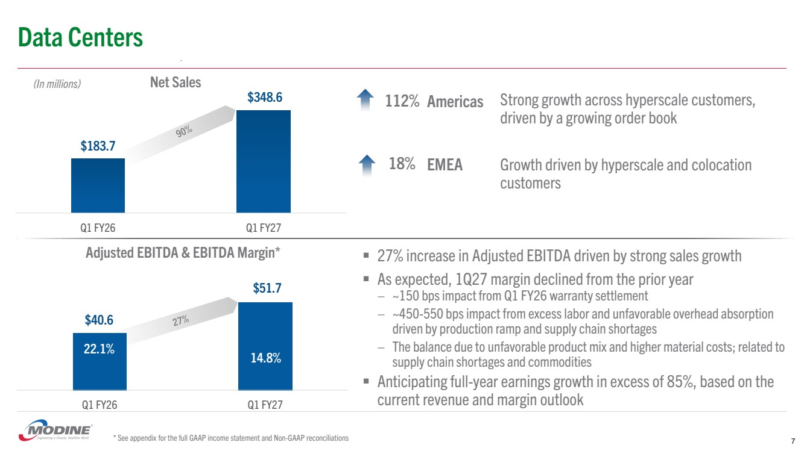</p></td><td width="7.7%" valign="middle" style="padding:0in 5.4pt 0in 5.4pt;width:7.7%;"><p style="margin:0in 0in .0001pt;"><font size="1" color="white" face="Arial" style="color:white;font-size:1.0pt;">Q1 FY26 Q1 FY27
Net Sales
Data Centers
7
$183.7
$348.6
(In millions)
Americas
EMEA
112%
Q1 FY26 Q1 FY27
Adjusted EBITDA &amp; EBITDA Margin*
$40.6
$51.7
22.1% 14.8%
&#x25AA; 27% increase in Adjusted EBITDA driven by strong sales growth
&#x25AA; As expected, 1Q27 margin declined from the prior year
&#x2013; ~150 bps impact from Q1 FY26 warranty settlement
&#x2013; ~450-550 bps impact from excess labor and unfavorable overhead absorption
driven by production ramp and supply chain shortages
&#x2013; The balance due to unfavorable product mix and higher material costs; related to
supply chain shortages and commodities
&#x25AA; Anticipating full-year earnings growth in excess of 85%, based on the
current revenue and margin outlook
* See appendix for the full GAAP income statement and Non-GAAP reconciliations
18%
Strong growth across hyperscale customers,
driven by a growing order book
Growth driven by hyperscale and colocation
customers</font></p></td></tr></table></div><div style="margin-left:2.6515151515151%;margin-right:2.65151515151515%;page-break-after:always;" ><div style="background-color:#000000;clear:both;height:2pt;border:0;margin:30pt 0pt 30pt 0pt;"></div></div><div align="center"><table border="0" cellspacing="0" cellpadding="0" style="width:100%;border-collapse:collapse;"><tr style="page-break-inside:avoid;"><td style="padding:0in 5.4pt 0in 5.4pt;valign:middle;width:7.7%"></td><td width="84.4%" valign="top" style="padding:0in 5.4pt 0in 5.4pt;width:92.3%;"><p align="center" style="margin:0in 0in .0001pt;text-align:center;">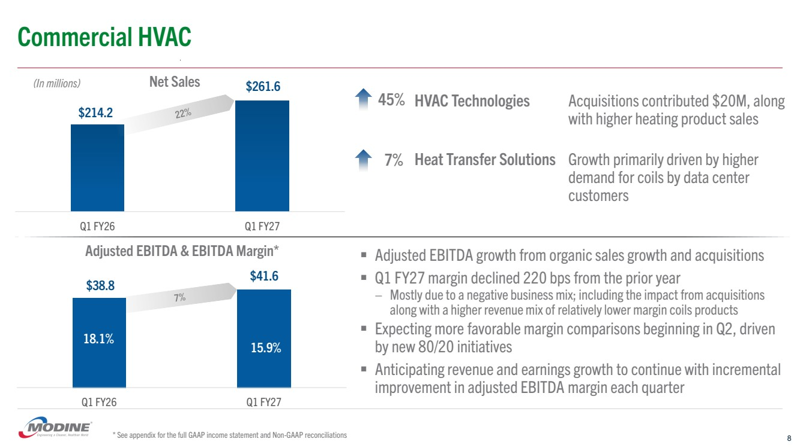</p></td><td width="7.7%" valign="middle" style="padding:0in 5.4pt 0in 5.4pt;width:7.7%;"><p style="margin:0in 0in .0001pt;"><font size="1" color="white" face="Arial" style="color:white;font-size:1.0pt;">Q1 FY26 Q1 FY27
Net Sales
Commercial HVAC
8
$214.2
$261.6 (In millions)
HVAC Technologies
Heat Transfer Solutions
Q1 FY26 Q1 FY27
Adjusted EBITDA &amp; EBITDA Margin*
$38.8 $41.6
18.1% 15.9%
&#x25AA; Adjusted EBITDA growth from organic sales growth and acquisitions
&#x25AA; Q1 FY27 margin declined 220 bps from the prior year
&#x2013; Mostly due to a negative business mix; including the impact from acquisitions
along with a higher revenue mix of relatively lower margin coils products
&#x25AA; Expecting more favorable margin comparisons beginning in Q2, driven
by new 80/20 initiatives
&#x25AA; Anticipating revenue and earnings growth to continue with incremental
improvement in adjusted EBITDA margin each quarter
* See appendix for the full GAAP income statement and Non-GAAP reconciliations
7%
45% Acquisitions contributed $20M, along
with higher heating product sales
Growth primarily driven by higher
demand for coils by data center
customers</font></p></td></tr></table></div><div style="margin-left:2.6515151515151%;margin-right:2.65151515151515%;page-break-after:always;" ><div style="background-color:#000000;clear:both;height:2pt;border:0;margin:30pt 0pt 30pt 0pt;"></div></div><div align="center"><table border="0" cellspacing="0" cellpadding="0" style="width:100%;border-collapse:collapse;"><tr style="page-break-inside:avoid;"><td style="padding:0in 5.4pt 0in 5.4pt;valign:middle;width:7.7%"></td><td width="84.4%" valign="top" style="padding:0in 5.4pt 0in 5.4pt;width:92.3%;"><p align="center" style="margin:0in 0in .0001pt;text-align:center;">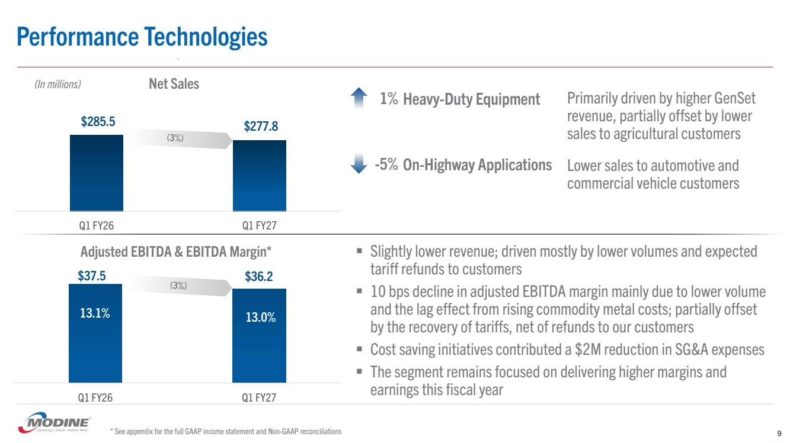</p></td><td width="7.7%" valign="middle" style="padding:0in 5.4pt 0in 5.4pt;width:7.7%;"><p style="margin:0in 0in .0001pt;"><font size="1" color="white" face="Arial" style="color:white;font-size:1.0pt;">Q1 FY26 Q1 FY27
Adjusted EBITDA &amp; EBITDA Margin*
Q1 FY26 Q1 FY27
Net Sales
Performance Technologies
$285.5 $277.8
$37.5 $36.2
(In millions)
Heavy-Duty Equipment
On-Highway Applications
&#x25AA; Slightly lower revenue; driven mostly by lower volumes and expected
tariff refunds to customers
&#x25AA; 10 bps decline in adjusted EBITDA margin mainly due to lower volume
and the lag effect from rising commodity metal costs; partially offset
by the recovery of tariffs, net of refunds to our customers
&#x25AA; Cost saving initiatives contributed a $2M reduction in SG&amp;A expenses
&#x25AA; The segment remains focused on delivering higher margins and
earnings this fiscal year
-5%
13.1% 13.0%
* See appendix for the full GAAP income statement and Non-GAAP reconciliations 9
1% Primarily driven by higher GenSet
revenue, partially offset by lower
sales to agricultural customers
Lower sales to automotive and
commercial vehicle customers</font></p></td></tr></table></div><div style="margin-left:2.6515151515151%;margin-right:2.65151515151515%;page-break-after:always;" ><div style="background-color:#000000;clear:both;height:2pt;border:0;margin:30pt 0pt 30pt 0pt;"></div></div><div align="center"><table border="0" cellspacing="0" cellpadding="0" style="width:100%;border-collapse:collapse;"><tr style="page-break-inside:avoid;"><td style="padding:0in 5.4pt 0in 5.4pt;valign:middle;width:7.7%"></td><td width="84.4%" valign="top" style="padding:0in 5.4pt 0in 5.4pt;width:92.3%;"><p align="center" style="margin:0in 0in .0001pt;text-align:center;">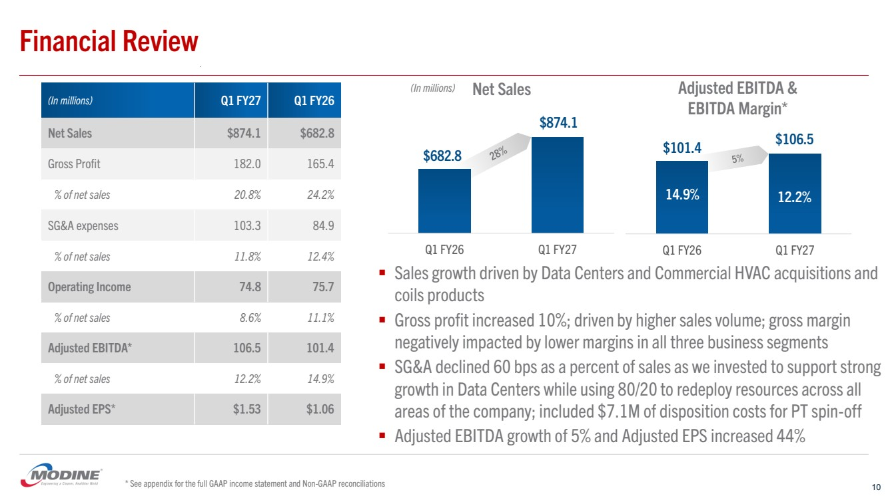</p></td><td width="7.7%" valign="middle" style="padding:0in 5.4pt 0in 5.4pt;width:7.7%;"><p style="margin:0in 0in .0001pt;"><font size="1" color="white" face="Arial" style="color:white;font-size:1.0pt;">Q1 FY26 Q1 FY27
Adjusted EBITDA &amp;
EBITDA Margin*
Q1 FY26 Q1 FY27
Net Sales
Financial Review
(In millions) Q1 FY27 Q1 FY26
Net Sales $874.1 $682.8
Gross Profit 182.0 165.4
% of net sales 20.8% 24.2%
SG&amp;A expenses 103.3 84.9
% of net sales 11.8% 12.4%
Operating Income 74.8 75.7
% of net sales 8.6% 11.1%
Adjusted EBITDA* 106.5 101.4
% of net sales 12.2% 14.9%
Adjusted EPS* $1.53 $1.06
(In millions)
$682.8
$874.1
$101.4 $106.5
&#x25AA; Sales growth driven by Data Centers and Commercial HVAC acquisitions and
coils products
&#x25AA; Gross profit increased 10%; driven by higher sales volume; gross margin
negatively impacted by lower margins in all three business segments
&#x25AA; SG&amp;A declined 60 bps as a percent of sales as we invested to support strong
growth in Data Centers while using 80/20 to redeploy resources across all
areas of the company; included $7.1M of disposition costs for PT spin-off
&#x25AA; Adjusted EBITDA growth of 5% and Adjusted EPS increased 44%
14.9% 12.2%
* See appendix for the full GAAP income statement and Non-GAAP reconciliations 10</font></p></td></tr></table></div><div style="margin-left:2.6515151515151%;margin-right:2.65151515151515%;page-break-after:always;" ><div style="background-color:#000000;clear:both;height:2pt;border:0;margin:30pt 0pt 30pt 0pt;"></div></div><div align="center"><table border="0" cellspacing="0" cellpadding="0" style="width:100%;border-collapse:collapse;"><tr style="page-break-inside:avoid;"><td style="padding:0in 5.4pt 0in 5.4pt;valign:middle;width:7.7%"></td><td width="84.4%" valign="top" style="padding:0in 5.4pt 0in 5.4pt;width:92.3%;"><p align="center" style="margin:0in 0in .0001pt;text-align:center;">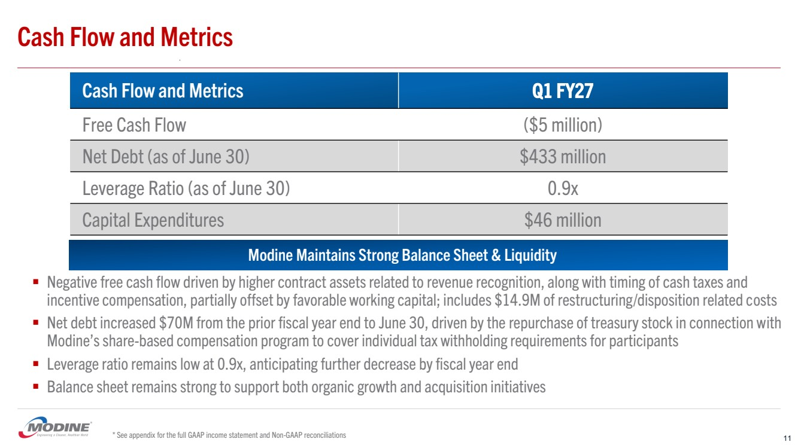</p></td><td width="7.7%" valign="middle" style="padding:0in 5.4pt 0in 5.4pt;width:7.7%;"><p style="margin:0in 0in .0001pt;"><font size="1" color="white" face="Arial" style="color:white;font-size:1.0pt;">Cash Flow and Metrics
Cash Flow and Metrics Q1 FY27
Free Cash Flow ($5 million)
Net Debt (as of June 30) $433 million
Leverage Ratio (as of June 30) 0.9x
Capital Expenditures $46 million
&#x25AA; Negative free cash flow driven by higher contract assets related to revenue recognition, along with timing of cash taxes and
incentive compensation, partially offset by favorable working capital; includes $14.9M of restructuring/disposition related costs
&#x25AA; Net debt increased $70M from the prior fiscal year end to June 30, driven by the repurchase of treasury stock in connection with
Modine&#x2019;s share-based compensation program to cover individual tax withholding requirements for participants
&#x25AA; Leverage ratio remains low at 0.9x, anticipating further decrease by fiscal year end
&#x25AA; Balance sheet remains strong to support both organic growth and acquisition initiatives
* See appendix for the full GAAP income statement and Non-GAAP reconciliations 11
Modine Maintains Strong Balance Sheet &amp; Liquidity</font></p></td></tr></table></div><div style="margin-left:2.6515151515151%;margin-right:2.65151515151515%;page-break-after:always;" ><div style="background-color:#000000;clear:both;height:2pt;border:0;margin:30pt 0pt 30pt 0pt;"></div></div><div align="center"><table border="0" cellspacing="0" cellpadding="0" style="width:100%;border-collapse:collapse;"><tr style="page-break-inside:avoid;"><td style="padding:0in 5.4pt 0in 5.4pt;valign:middle;width:7.7%"></td><td width="84.4%" valign="top" style="padding:0in 5.4pt 0in 5.4pt;width:92.3%;"><p align="center" style="margin:0in 0in .0001pt;text-align:center;">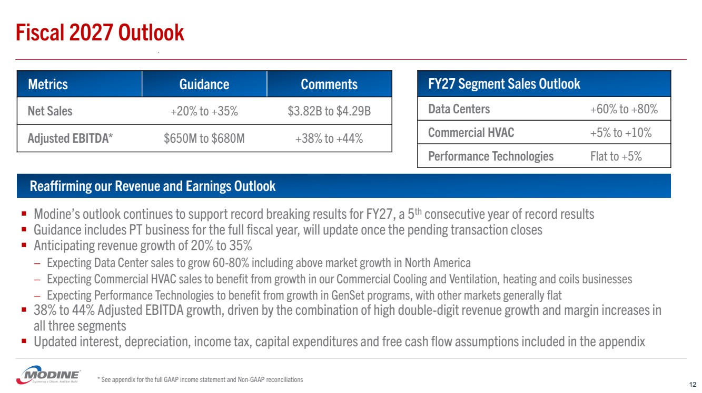</p></td><td width="7.7%" valign="middle" style="padding:0in 5.4pt 0in 5.4pt;width:7.7%;"><p style="margin:0in 0in .0001pt;"><font size="1" color="white" face="Arial" style="color:white;font-size:1.0pt;">Fiscal 2027 Outlook
Metrics Guidance Comments
Net Sales +20% to +35% $3.82B to $4.29B
Adjusted EBITDA* $650M to $680M +38% to +44%
FY27 Segment Sales Outlook
Data Centers +60% to +80%
Commercial HVAC +5% to +10%
Performance Technologies Flat to +5%
* See appendix for the full GAAP income statement and Non-GAAP reconciliations
Reaffirming our Revenue and Earnings Outlook
&#x25AA; Modine&#x2019;s outlook continues to support record breaking results for FY27, a 5th consecutive year of record results
&#x25AA; Guidance includes PT business for the full fiscal year, will update once the pending transaction closes
&#x25AA; Anticipating revenue growth of 20% to 35%
&#x2013; Expecting Data Center sales to grow 60-80% including above market growth in North America
&#x2013; Expecting Commercial HVAC sales to benefit from growth in our Commercial Cooling and Ventilation, heating and coils businesses
&#x2013; Expecting Performance Technologies to benefit from growth in GenSet programs, with other markets generally flat
&#x25AA; 38% to 44% Adjusted EBITDA growth, driven by the combination of high double-digit revenue growth and margin increases in
all three segments
&#x25AA; Updated interest, depreciation, income tax, capital expenditures and free cash flow assumptions included in the appendix
12</font></p></td></tr></table></div><div style="margin-left:2.6515151515151%;margin-right:2.65151515151515%;page-break-after:always;" ><div style="background-color:#000000;clear:both;height:2pt;border:0;margin:30pt 0pt 30pt 0pt;"></div></div><div align="center"><table border="0" cellspacing="0" cellpadding="0" style="width:100%;border-collapse:collapse;"><tr style="page-break-inside:avoid;"><td style="padding:0in 5.4pt 0in 5.4pt;valign:middle;width:7.7%"></td><td width="84.4%" valign="top" style="padding:0in 5.4pt 0in 5.4pt;width:92.3%;"><p align="center" style="margin:0in 0in .0001pt;text-align:center;">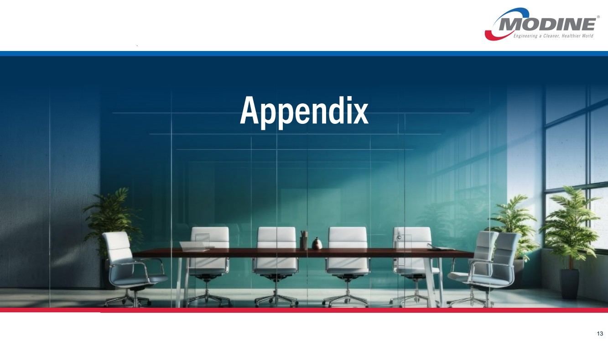</p></td><td width="7.7%" valign="middle" style="padding:0in 5.4pt 0in 5.4pt;width:7.7%;"><p style="margin:0in 0in .0001pt;"><font size="1" color="white" face="Arial" style="color:white;font-size:1.0pt;">Appendix
13</font></p></td></tr></table></div><div style="margin-left:2.6515151515151%;margin-right:2.65151515151515%;page-break-after:always;" ><div style="background-color:#000000;clear:both;height:2pt;border:0;margin:30pt 0pt 30pt 0pt;"></div></div><div align="center"><table border="0" cellspacing="0" cellpadding="0" style="width:100%;border-collapse:collapse;"><tr style="page-break-inside:avoid;"><td style="padding:0in 5.4pt 0in 5.4pt;valign:middle;width:7.7%"></td><td width="84.4%" valign="top" style="padding:0in 5.4pt 0in 5.4pt;width:92.3%;"><p align="center" style="margin:0in 0in .0001pt;text-align:center;">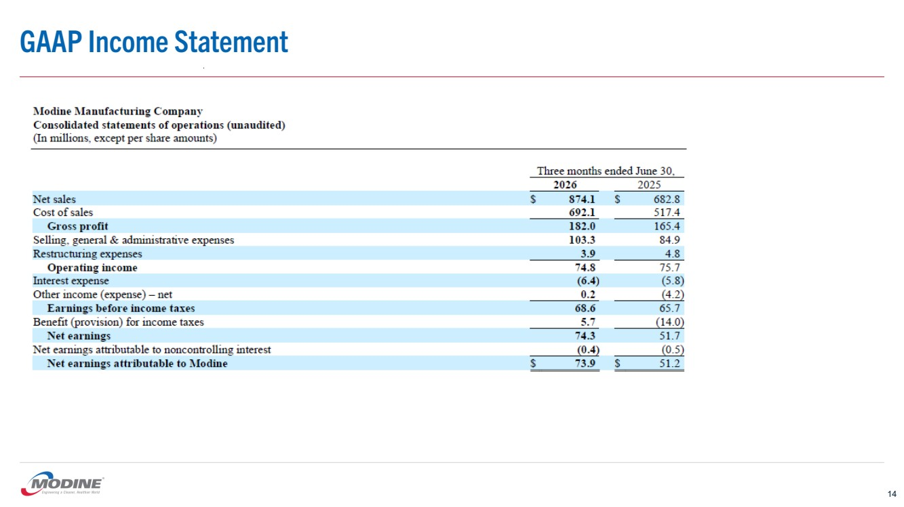</p></td><td width="7.7%" valign="middle" style="padding:0in 5.4pt 0in 5.4pt;width:7.7%;"><p style="margin:0in 0in .0001pt;"><font size="1" color="white" face="Arial" style="color:white;font-size:1.0pt;">GAAP Income Statement
14</font></p></td></tr></table></div><div style="margin-left:2.6515151515151%;margin-right:2.65151515151515%;page-break-after:always;" ><div style="background-color:#000000;clear:both;height:2pt;border:0;margin:30pt 0pt 30pt 0pt;"></div></div><div align="center"><table border="0" cellspacing="0" cellpadding="0" style="width:100%;border-collapse:collapse;"><tr style="page-break-inside:avoid;"><td style="padding:0in 5.4pt 0in 5.4pt;valign:middle;width:7.7%"></td><td width="84.4%" valign="top" style="padding:0in 5.4pt 0in 5.4pt;width:92.3%;"><p align="center" style="margin:0in 0in .0001pt;text-align:center;">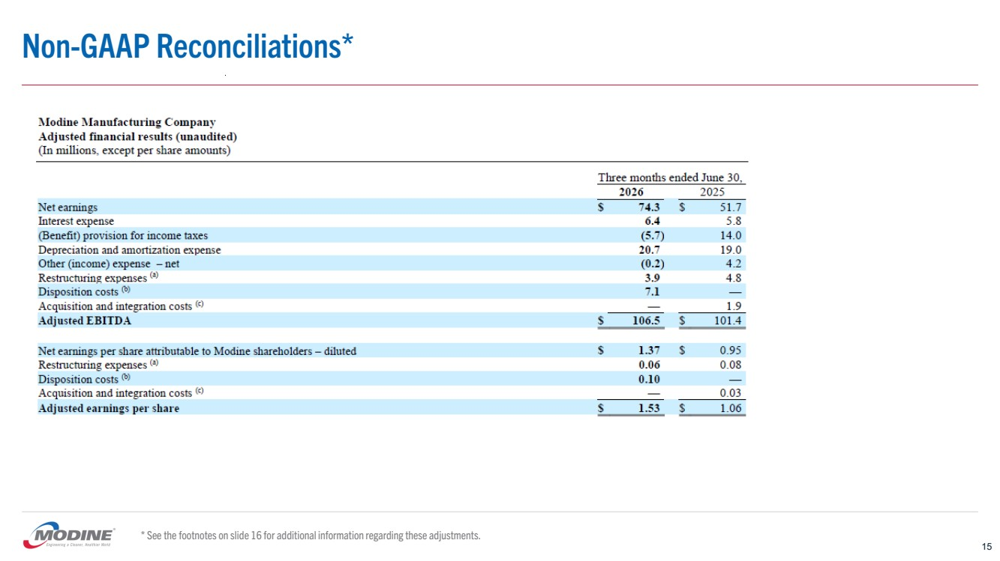</p></td><td width="7.7%" valign="middle" style="padding:0in 5.4pt 0in 5.4pt;width:7.7%;"><p style="margin:0in 0in .0001pt;"><font size="1" color="white" face="Arial" style="color:white;font-size:1.0pt;">Non-GAAP Reconciliations*
15
* See the footnotes on slide 16 for additional information regarding these adjustments.</font></p></td></tr></table></div><div style="margin-left:2.6515151515151%;margin-right:2.65151515151515%;page-break-after:always;" ><div style="background-color:#000000;clear:both;height:2pt;border:0;margin:30pt 0pt 30pt 0pt;"></div></div><div align="center"><table border="0" cellspacing="0" cellpadding="0" style="width:100%;border-collapse:collapse;"><tr style="page-break-inside:avoid;"><td style="padding:0in 5.4pt 0in 5.4pt;valign:middle;width:7.7%"></td><td width="84.4%" valign="top" style="padding:0in 5.4pt 0in 5.4pt;width:92.3%;"><p align="center" style="margin:0in 0in .0001pt;text-align:center;">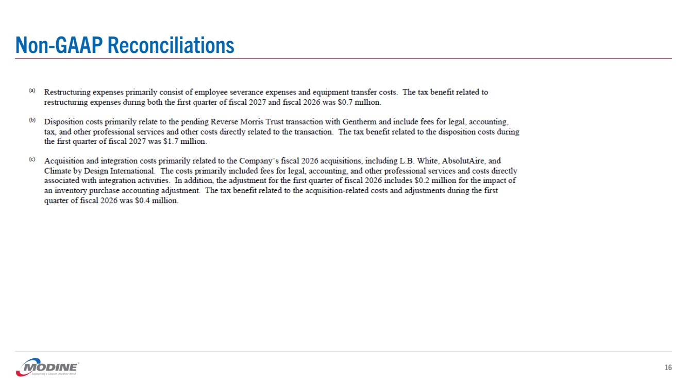</p></td><td width="7.7%" valign="middle" style="padding:0in 5.4pt 0in 5.4pt;width:7.7%;"><p style="margin:0in 0in .0001pt;"><font size="1" color="white" face="Arial" style="color:white;font-size:1.0pt;">Non-GAAP Reconciliations
16</font></p></td></tr></table></div><div style="margin-left:2.6515151515151%;margin-right:2.65151515151515%;page-break-after:always;" ><div style="background-color:#000000;clear:both;height:2pt;border:0;margin:30pt 0pt 30pt 0pt;"></div></div><div align="center"><table border="0" cellspacing="0" cellpadding="0" style="width:100%;border-collapse:collapse;"><tr style="page-break-inside:avoid;"><td style="padding:0in 5.4pt 0in 5.4pt;valign:middle;width:7.7%"></td><td width="84.4%" valign="top" style="padding:0in 5.4pt 0in 5.4pt;width:92.3%;"><p align="center" style="margin:0in 0in .0001pt;text-align:center;">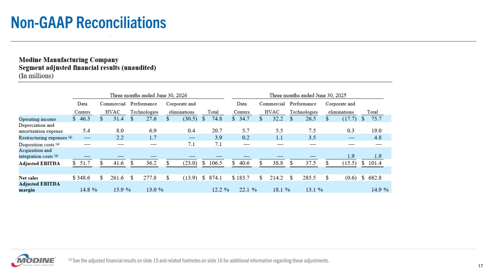</p></td><td width="7.7%" valign="middle" style="padding:0in 5.4pt 0in 5.4pt;width:7.7%;"><p style="margin:0in 0in .0001pt;"><font size="1" color="white" face="Arial" style="color:white;font-size:1.0pt;">Non-GAAP Reconciliations
17
(a) See the adjusted financial results on slide 15 and related footnotes on slide 16 for additional information regarding these adjustments.</font></p></td></tr></table></div><div style="margin-left:2.6515151515151%;margin-right:2.65151515151515%;page-break-after:always;" ><div style="background-color:#000000;clear:both;height:2pt;border:0;margin:30pt 0pt 30pt 0pt;"></div></div><div align="center"><table border="0" cellspacing="0" cellpadding="0" style="width:100%;border-collapse:collapse;"><tr style="page-break-inside:avoid;"><td style="padding:0in 5.4pt 0in 5.4pt;valign:middle;width:7.7%"></td><td width="84.4%" valign="top" style="padding:0in 5.4pt 0in 5.4pt;width:92.3%;"><p align="center" style="margin:0in 0in .0001pt;text-align:center;">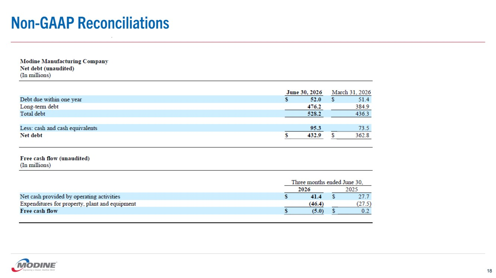</p></td><td width="7.7%" valign="middle" style="padding:0in 5.4pt 0in 5.4pt;width:7.7%;"><p style="margin:0in 0in .0001pt;"><font size="1" color="white" face="Arial" style="color:white;font-size:1.0pt;">Non-GAAP Reconciliations
18</font></p></td></tr></table></div><div style="margin-left:2.6515151515151%;margin-right:2.65151515151515%;page-break-after:always;" ><div style="background-color:#000000;clear:both;height:2pt;border:0;margin:30pt 0pt 30pt 0pt;"></div></div><div align="center"><table border="0" cellspacing="0" cellpadding="0" style="width:100%;border-collapse:collapse;"><tr style="page-break-inside:avoid;"><td style="padding:0in 5.4pt 0in 5.4pt;valign:middle;width:7.7%"></td><td width="84.4%" valign="top" style="padding:0in 5.4pt 0in 5.4pt;width:92.3%;"><p align="center" style="margin:0in 0in .0001pt;text-align:center;">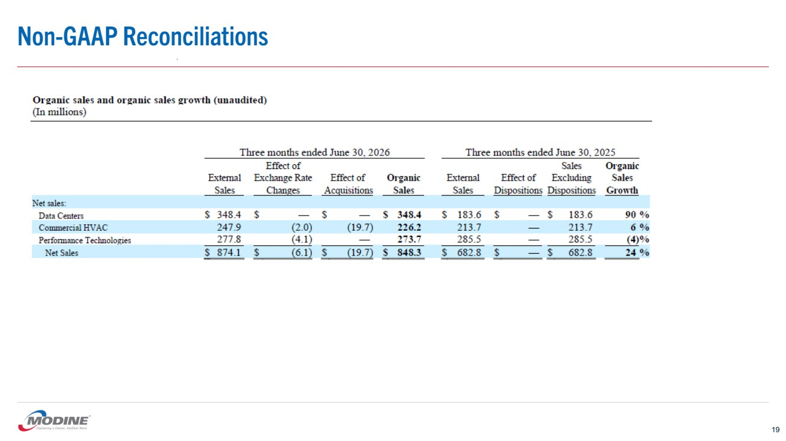</p></td><td width="7.7%" valign="middle" style="padding:0in 5.4pt 0in 5.4pt;width:7.7%;"><p style="margin:0in 0in .0001pt;"><font size="1" color="white" face="Arial" style="color:white;font-size:1.0pt;">Non-GAAP Reconciliations
19</font></p></td></tr></table></div><div style="margin-left:2.6515151515151%;margin-right:2.65151515151515%;page-break-after:always;" ><div style="background-color:#000000;clear:both;height:2pt;border:0;margin:30pt 0pt 30pt 0pt;"></div></div><div align="center"><table border="0" cellspacing="0" cellpadding="0" style="width:100%;border-collapse:collapse;"><tr style="page-break-inside:avoid;"><td style="padding:0in 5.4pt 0in 5.4pt;valign:middle;width:7.7%"></td><td width="84.4%" valign="top" style="padding:0in 5.4pt 0in 5.4pt;width:92.3%;"><p align="center" style="margin:0in 0in .0001pt;text-align:center;">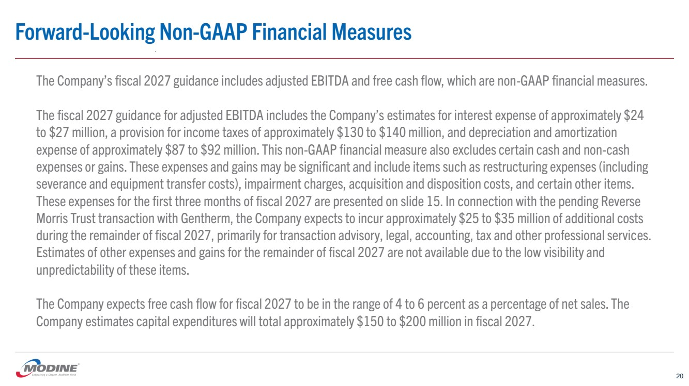</p></td><td width="7.7%" valign="middle" style="padding:0in 5.4pt 0in 5.4pt;width:7.7%;"><p style="margin:0in 0in .0001pt;"><font size="1" color="white" face="Arial" style="color:white;font-size:1.0pt;">Forward-Looking Non-GAAP Financial Measures
20
The Company&#x2019;s fiscal 2027 guidance includes adjusted EBITDA and free cash flow, which are non-GAAP financial measures.
The fiscal 2027 guidance for adjusted EBITDA includes the Company&#x2019;s estimates for interest expense of approximately $24
to $27 million, a provision for income taxes of approximately $130 to $140 million, and depreciation and amortization
expense of approximately $87 to $92 million. This non-GAAP financial measure also excludes certain cash and non-cash
expenses or gains. These expenses and gains may be significant and include items such as restructuring expenses (including
severance and equipment transfer costs), impairment charges, acquisition and disposition costs, and certain other items.
These expenses for the first three months of fiscal 2027 are presented on slide 15. In connection with the pending Reverse
Morris Trust transaction with Gentherm, the Company expects to incur approximately $25 to $35 million of additional costs
during the remainder of fiscal 2027, primarily for transaction advisory, legal, accounting, tax and other professional services.
Estimates of other expenses and gains for the remainder of fiscal 2027 are not available due to the low visibility and
unpredictability of these items.
The Company expects free cash flow for fiscal 2027 to be in the range of 4 to 6 percent as a percentage of net sales. The
Company estimates capital expenditures will total approximately $150 to $200 million in fiscal 2027. </font></p></td></tr></table></div><div style="margin-left:2.6515151515151%;margin-right:2.65151515151515%;page-break-after:avoid;" ><div style="background-color:#000000;clear:both;height:2pt;border:0;margin:30pt 0pt 30pt 0pt;"></div></div></div></div></body></html>
</TEXT>
</DOCUMENT>
